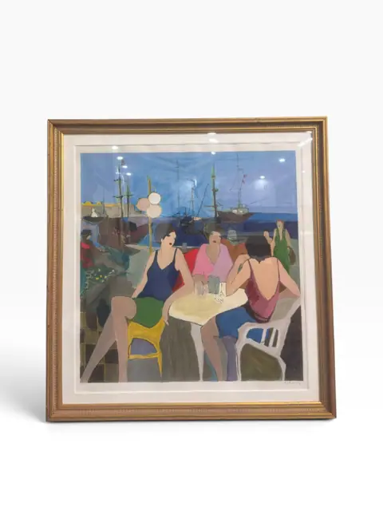
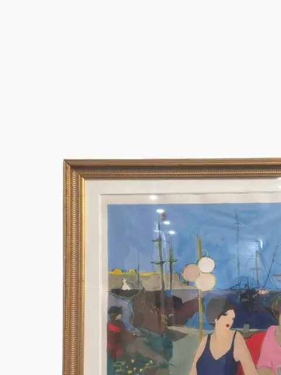
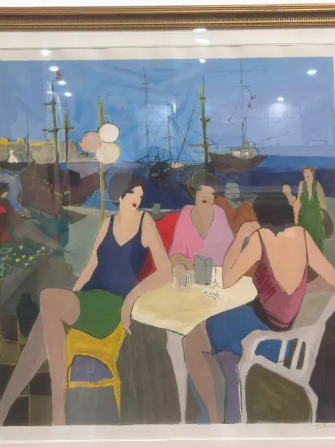
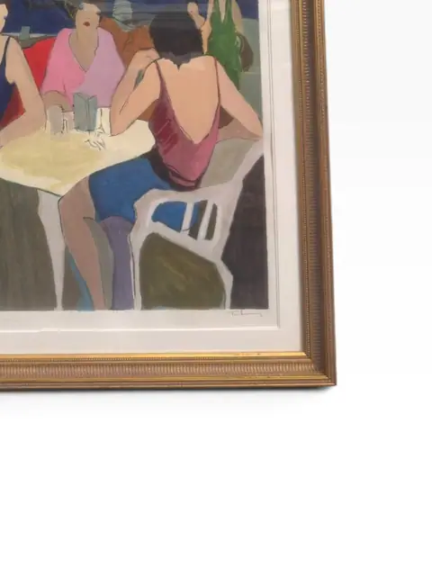
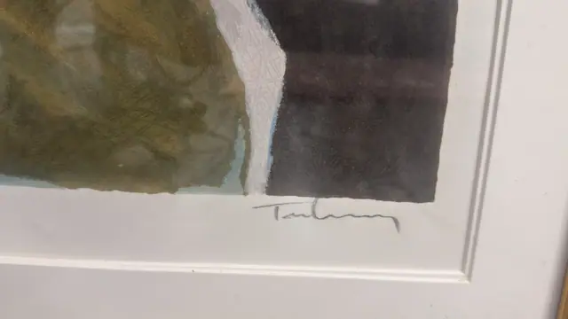
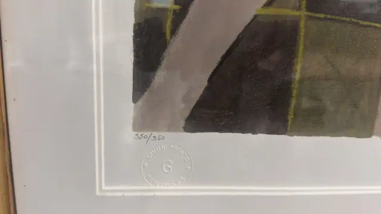
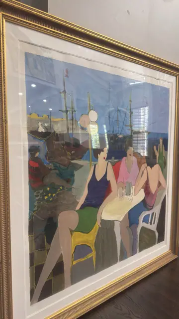
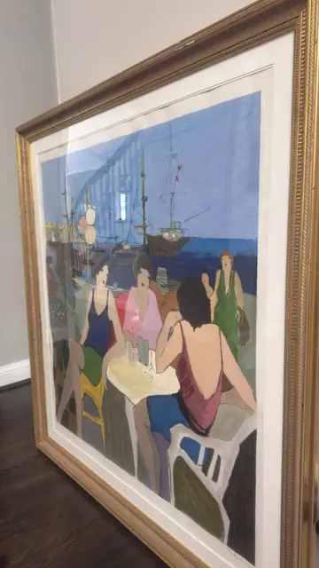
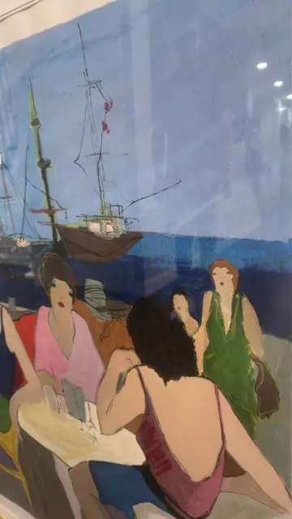

Paintings & Prints
Seaside Café
Itzhak Tarkay · 20th century
Price Upon Request











About the Item
Three elegant women linger over a café table on a sunlit quay, masts and rigging dancing against a brilliant blue harbour behind them. This is Tarkay's beloved seaside-café world — flat planes of azure, coral and gold composed with effortless grace. Signed by the artist and presented in a classic gilt frame with a wide white mat, it is an instantly recognisable modern classic. Signature lower right consistent with 'Tarkay' (partially legible pencil mark, verified in enlarged crop of detay_2.jpg). The composition matches Tarkay's well-documented 'Outdoor Seaside Cafe' serigraph; Itzhak Tarkay (1935–2012) is a documented Serbian-Israeli artist known for café and harbour scenes in editions of 350. Tape-measure photos are partial — dimensions listed as not legible. Signature detail: Signed lower right 'Tarkay'.
Details
- Creator:
- Itzhak Tarkay
- Creation Year:
- 20th century
- Medium:
- Serigraph
- Period:
- 20Th
- Condition:
- Offered in the condition shown in the photographs.
- Reference Number:
- VO-303